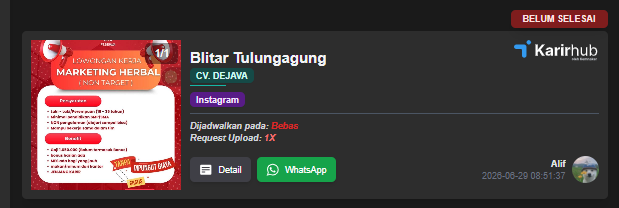

📚 Daftar Panduan
1. Cara Memposting Iklan dari Marketing di OtoTop
Langkah 1
Buka OtoTop.

- klik gambar lalu salin
Langkah 2
Buka aplikasi bot telegram lalu tempel template

- tempel foto yang habis di salin - klik proses foto - tunggu foto selesai di proses - Simpan foto yang selesai diproses
Langkah 3
Buka chrome yang sesuai dengan kota

klik chrome yang sesuai mau posting iklan - klik meta - posting sekarang
Langkah 4
klik tulisan foto - cari poster yang sesuai dengan daerahnya/yang baru saja di unduh
Langkah 5
Buka ototop salin caption yang sudah di sediakan oleh Marketing.
Langkah 6
Kembali ke chrome lalu tempel captionnya di kolom yang tersedia - posting sekarang.
2. Cara Repost Iklan ke Story
Langkah 1
Buka Hp Sesuai kota yang mau dibuat Story
Buka handphone - buka profile akun instagram - klik postingan yang habis di posting di laptop -klik tanda panah di bawah - klik buat story
Catatan : kalau story harus ada liknya - klik stiker lalu pilih tautan - tempel link tautan yang tersedia di ototop.
3. Cara Posting Konten Harian Berupa Poster
Langkah 1
Buka Ototop - lalu cari cdc - konten Harian

Klik gambar bawahnya(konten harian)
klik filter - ketik daerah yang mau di cari - close(tanda silang)
klik cari tanda panah ke bawah
LANGKAH 2
klik gambar post

klik gambar unduh(download)
Posting di chrome seperti posting iklan poster
Catatan : untuk caption tempel caption yang sudah di sediakan
buka cdc poster di atas - secrol ke bawah - cari caption konten harian
4. Cara Posting Konten Harian Berupa Reels
Langkah 1
Buka Ototop - lalu cari cdc - konten Harian
Klik gambar bawahnya(konten harian)
klik filter - ketik daerah yang mau di cari - close(tanda silang)
klik cari tanda panah ke bawah
LANGKAH 2
klik gambar post
klik gambar salin gambar
Langkah 3
Buka bot reels telegram

klik start - tempel gambar yang udah di salin - tunggu Reels selesai di proses - simpan Reels.
- klik meta - posting sekarang - cari video reels yang sudah tersimpan di file galeri.

- kalau sudah klik posting
Catatan : untuk caption tempel caption yang sudah di sediakan
buka cdc poster di atas - secrol ke bawah - cari caption konten harian